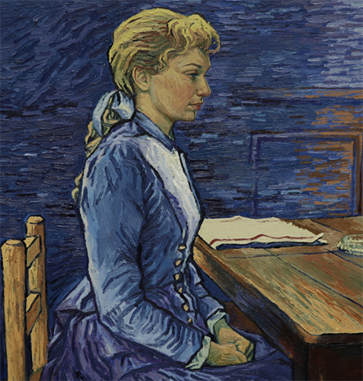

본문 컨텐츠 영역
TOP
About
loving vincent
CAST
-  Vincent van Gogh is the world’s most famous painter. Vincent is not only famous for his paintings, but also for his tortured life, notably for cutting off his ear and shooting himself while painting at his easel;
-
 Vincent is not only famous for his paintings but also for his tortured life, notably for cutting off his ear and shooting himself while painting at his easel;
Vincent is not only famous for his paintings but also for his tortured life, notably for cutting off his ear and shooting himself while painting at his easel;
- The reason we made the film is not because we want to be the first, or that we want to set any records, it is because we believe that you cannot truly tell Vincent’s story without his paintings, so we needed to bring his paintings to life.
-
 The man was carrying nothing; his hands clasped to a fresh bullet wound leaking blood from his belly.
The man was carrying nothing; his hands clasped to a fresh bullet wound leaking blood from his belly.
- The reason we made the film Someone who has not, and never will have, any position in society, in short the lowest of the low.
-
 We painted over 65,000 frames on over 1,000 canvases. We shot the film with actors, and literally painted over it frame by frame. This is a very laborious and time-consuming process.
We painted over 65,000 frames on over 1,000 canvases. We shot the film with actors, and literally painted over it frame by frame. This is a very laborious and time-consuming process.
- READ MORE
GALLERY
Vincent van Gogh is the world’s most famous painter. His Starry Night, Café Terrace at Night, Sunflowers,Wheatfield with Crows and indeed his own face in his many self-portraits are among the most recognised images in our world.
Vincent is not only famous for his paintings, but also for his tortured life, notably for cutting off his ear and shooting himself while painting at his easel; painting to the bitter end of his unhappy misunderstood life. He is the world’s totemic ‘tortured artist’. Loving Vincent explores Vincent’s life and work by bringing to life some of Vincent van Gogh’s most inspirational paintings to tell his story.
We painted over 65,000 frames on over 1,000 canvases. We shot the film with actors, and literally painted over it frame by frame. This is a very laborious and time-consuming process. It has taken us 4 years to develop the technique, and it took us over 2 years with a team of over 100 painters working at studios in the Polish cities of Gdansk and Wroclaw, and a studio in Athens to complete the film.
The reason we made the film is not because we want to be the first, or that we want to set any records, it is because we believe that you cannot truly tell Vincent’s story without his paintings, so we needed to bring hispaintings to life.
MOVIE AND PAINTING
- THE MOVIE
- THE PAINTING